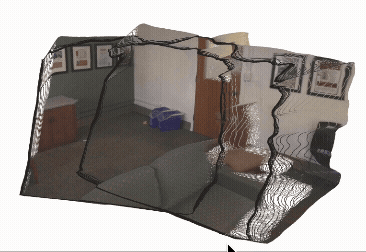
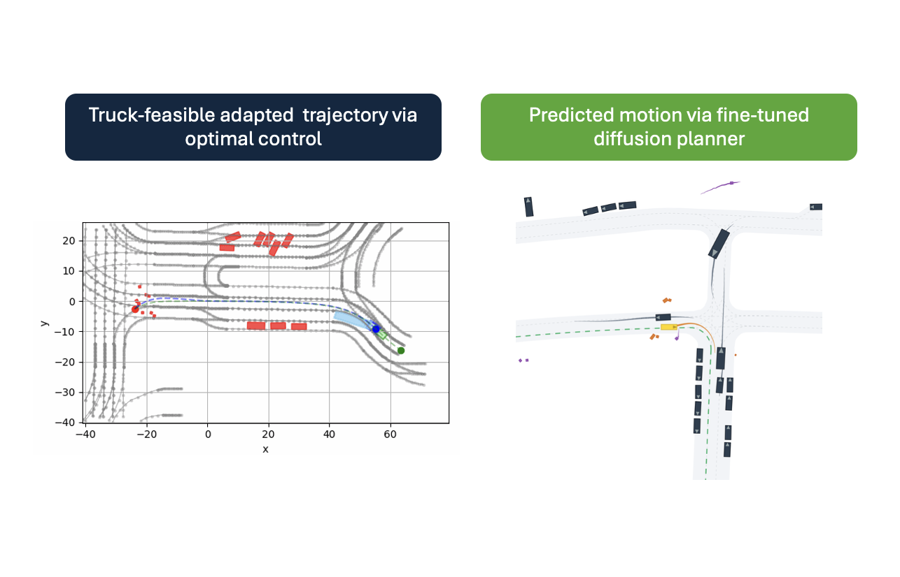
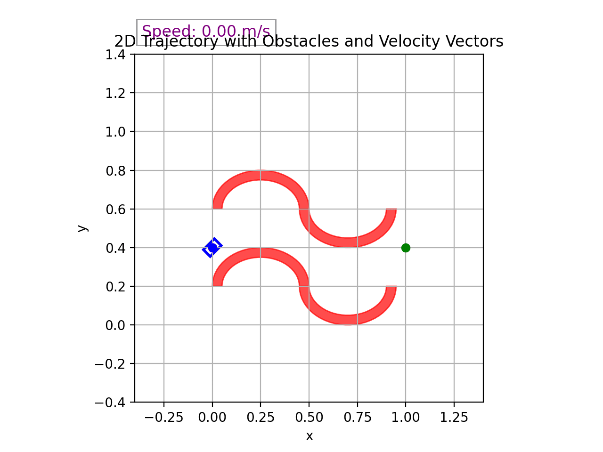

Multimodal 3D Perception for ADAS Using Knowledge Distillation
My thesis explores knowledge distillation for multimodal 3D perception in advanced driver-assistance systems.
Projects at the intersection of learned environment representations, 3D perception, autonomous driving, trajectory optimization, and motion planning.
My thesis explores knowledge distillation for multimodal 3D perception in advanced driver-assistance systems.
This project explores how pretrained vision foundation models—including Mask2Former, SAM 3, and SAM 3D—can support structured reconstruction of realistic driving scenarios from KITTI-360 image data. The work also investigates 3D Gaussian splatting as a scene-representation technique.

We developed DepthAlignNet, a lightweight alignment model built on ZoeDepth predictions. Given paired RGB images and monocular depth estimates, it jointly refines depth and estimates camera geometry, using pixel-wise reprojection and geometric consistency objectives. Experiments on ScanNet-derived sequences improved cross-view consistency over raw monocular predictions, while absolute depth metrics remained competitive with the median-scaled baseline rather than surpassing it.

This project developed a pipeline to turn car-driving data from nuPlan into a truck-adapted dataset for motion-planner training. First, an optimization-based method adapted expert car trajectories to truck-specific dynamic constraints and collision avoidance. Second, a scene-level VQ-VAE learned discrete latent representations to cluster and balance driving scenarios without manual labels. Finally, the curated data was used to fine-tune a diffusion-based motion planner and predictor.
The project connected physical feasibility, dataset composition, and data-driven planning in one pipeline.

This work integrated neural-network signed distance field (SDF) approximations into a direct optimal-control and nonlinear-programming pipeline. The motivation was to replace many explicit geometric collision constraints with a differentiable constraint that can be embedded in trajectory optimization. Results showed that compact neural SDFs, together with principled initialization and training strategies, can connect learned environment modeling with classical optimization-based planning.